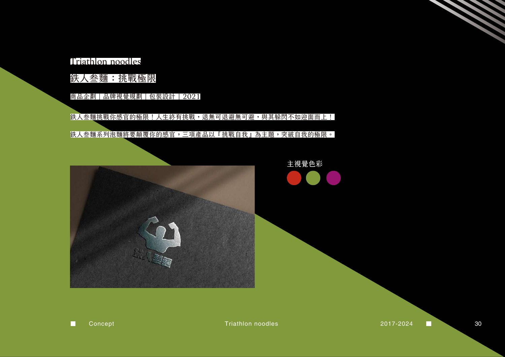
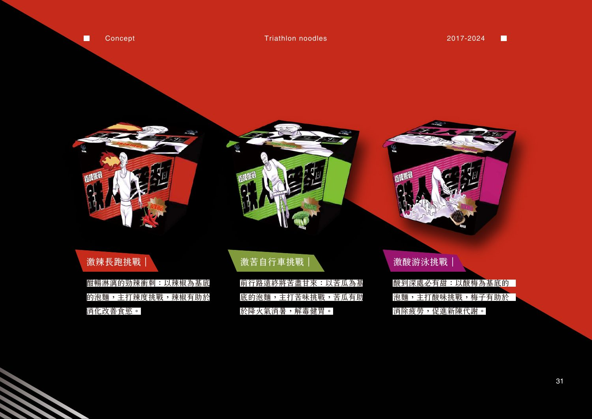
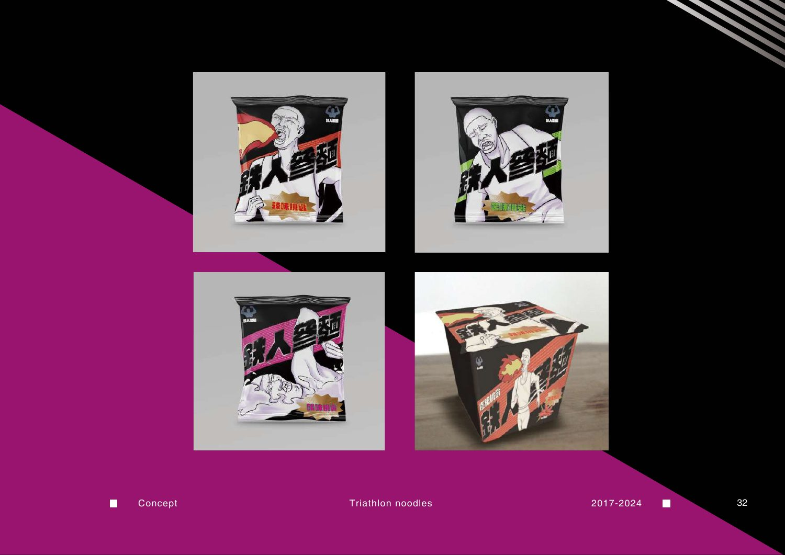
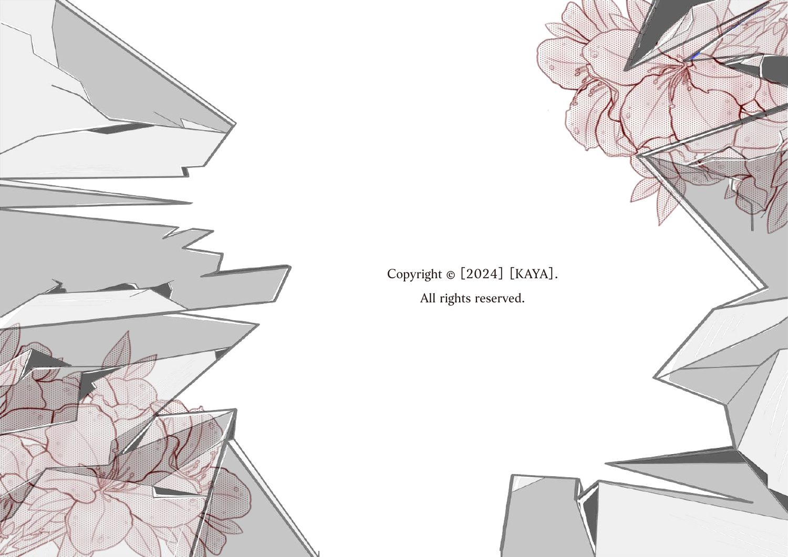

KAYA
®
PROJECT 10
/ 10
作品一覧へ ↗
SELECTED WORK / 10 — 10
Triathlon Noodles
トライアスロン麺：限界への挑戦

メインビジュアル / PAGE 34
PORTFOLIO ORIGINAL
プロジェクト詳細
04 PAGES

作品ページ / 35
KAYA PORTFOLIO 2017—2024

作品ページ / 36
KAYA PORTFOLIO 2017—2024

作品ページ / 37
KAYA PORTFOLIO 2017—2024
← 前の作品 / Elf Master Baking
作品一覧に戻る ↗